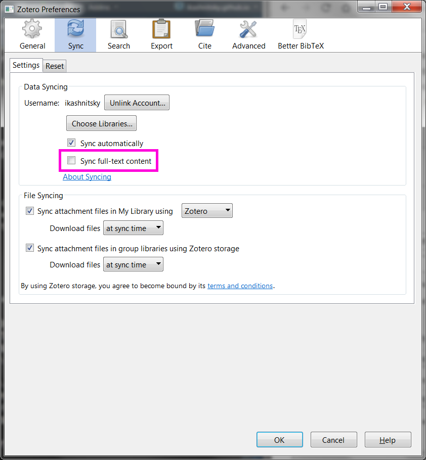
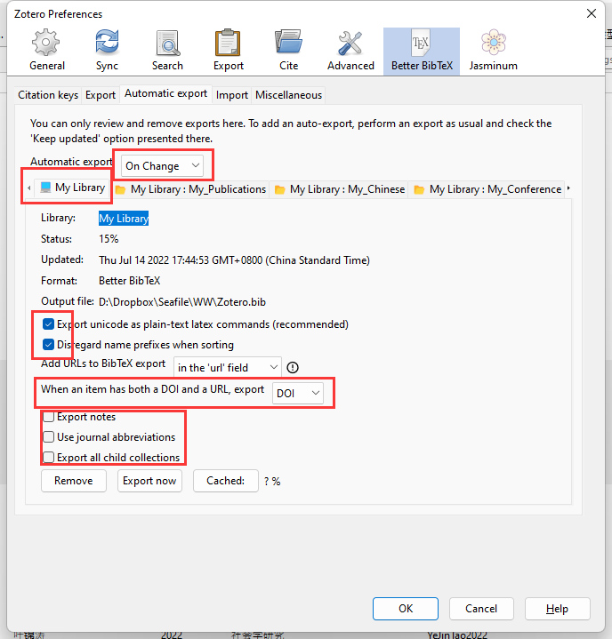

1 文献管理
Zotero是在我尝试过Endnotes和Jabref后长期使用的文献管理软件。 功能过于强大，且免费。 以下结合本组文献整理规范，对Zotero一些功能和设置进行说明。 如果你已经安装好Zotero，也请仔细对照设置部分，保证与团队一致。1
1.1 Zotero 6.0（及插件）的安装和注册
- 官网Zotero | Home进行下载并完成安装。（Chrome插件后期会自动安装）
- 回到官网进行注册,记住注册信息。
- 下载插件
- Better BibTeX, 将library导出为bib.格式与Markdown联动。
- ZotFile, 用来管理PDF文件;
- Jasminum, 让Zotero更好适配知网。
下载完成后进入软件-工具-插件-设置（齿轮标识）-Install Add-on From File-安装已经下载的两个插件。

1.2 主程序设置
1.2.1 常规 General
1.2.2 同步 Sync

选择自动同步，取消选择“同步全文”。 Zotero只有300MB文件储存空间，之后的空间使用均需按月或按年的维护费用。 如果你家资颇丰，自可购买；否则我们可以采用搭配坚果云的办法，用更节省的方式进行解决，具体参见 Section 1.4。
1.2.3 搜索 Search
保持默认即可。
1.2.4 导出 Export

1.2.5 引用 Cite
针对参考文献格式的设置。点击[获取更多样式]进入Zotero远程引文格式库。引文格式也可以通过.csl本地文件进行导入，点击[+]。
在”文字处理软件”(Word Processors)中安装MS Word加载项。
1.2.6 高级
文件储存位置：编辑→ 首选项→ 高级→ 文件和文件夹(Files and Folders)
- 设置根目录(Based directory)和数据存储位置。 根目录用于存储文献的pdf文件，设置后将在Zotero中生成软链接。 如决定用此种方式存储文献，可酌情放在较空的硬盘中。 如果之前选择了在
WebDAV方式，这里可以选择不设置。 - 数据储存位置（Data directory location）仅包含Zotero中的引录信息。 如果之前选择了在
WebDAV方式，这个文件夹可以不用同步，保留在本地即可。

1.3 插件设置
1.3.1 Better BibTeX
在安装Better BibTeX扩展程序后，将显示此选项卡。 安装扩展将整个书目库（或某些部分）导出为纯.bib文本文件。 在使用LaTex 或rmarkdown撰写学术论文时，需要这类文件。
Citation key 格式统一采用 authEtAl.capitalize+year。2

Better BibTeX提供了一种简便的方法，可以将Zotero的书目记录导出为纯.bib文本，并在记录更改后保持文件更新。只需右键单击Zotero中的集合，然后选择“导出集合”。
对于需要长期更新的bib文档可采用自动输出方法。 自动输出（Automatic export）设置：

选择持续更新。

输出的.bib文件应放置在我们要编译的.tex, .rmd, 或者.qmd文件的同一目录中。 .bib的名称在YAML标头中指定。 示例如图：

本组通常将Zotero与Rmarkdown或quarto联动。 关于这部分可参考官方链接说明。
1.3.2 Jasminum 设置
之前请按照提示，先安装PDFtk Server。

1.3.3 ZotFile 设置
工具→ ZotFile preference

在这里，我们定义了两条路径。 第一个是浏览器下载的文件的默认位置。 第二条路径指向为全文PDF创建的本地目录，我将其命名为zotero-library，并与我们选择的外部云解决方案同步。
下面的“use subfolder defined by…” 表示：根据paper的xxx来给论文分类（以再创建二级文件夹的方式） /%a的意思是按照作者名称分类。 本组通常不勾选。
设置附件的重命名格式, 推荐以下设置{%a}{%y_}{%t}。

1.4 Zotero + 坚果云
- 首先注册坚果云账号，开启坚果云的第三方应用管理。具体步骤如下：
- 登录网页端坚果云账号，点击右上角的账号名称→ 账户信息→ 安全选项→ 第三方应用管理→ 添加应用密码。 应用名称可写zotero，之后会自己生成一个应用密码。

- 打开Zotero：编辑→ 首选项→ 同步→ 设置，输入用户名和密码进行登陆,然后点击
Verify Server- 在文件同步部分建议采用
WebDAV方式，以获得更大的存储空间，同时又为多设备协同提供便利。 国内支持这种方式的最常见服务商是坚果云，对于坚果云如何联结Zotero可参照下图以及其官方帮助文档。
- 在文件同步部分建议采用

1.5 Zotero + Ipad
- 电脑端设置参见@sec-nutstone；
- Ipad端登陆同一个Zotero账户
- Settings → File syncing → 输入与@sec-nutstone相同的设置
Zotero截止至6.0版本仍然不具备同步软链接功能。 因此如有此需求（建议解锁这个功能；不管会不会真看，先解锁再说），需要在Zotfile 设置中选择General Settings下的“Attach stored copy of file(s)”。
祝贺！你已经完成了设置，请奖励自己一只鸡腿！